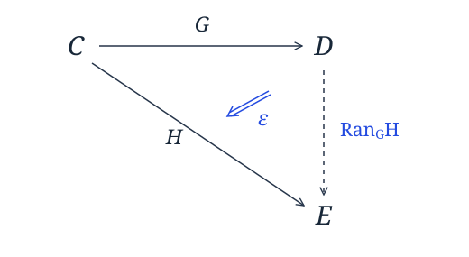

I think I may spend a post or two talking about Kan extensions.
They appear to be black magic to Haskell programmers, but as Saunders Mac Lane said in Categories for the Working Mathematician:
All concepts are Kan extensions.
So what is a Kan extension? They come in two forms: right- and left- Kan extensions.
First I'll talk about right Kan extensions, since Haskell programmers have a better intuition for them.
Introducing Right Kan Extension
If we observe the type for a right Kan extension over the category of Haskell types:
newtype Ran g h a = Ran
{ runRan :: forall b. (a -> g b) -> h b }
This is defined in category-extras under Control.Functor.KanExtension along with a lot of the traditional machinery for working with them.
We say that Ran g h is the right Kan extension of h along g. and mathematicians denote it . It has a pretty diagram associated with it, but thats as deep as I'll let the category theory go.

This looks an awful lot like the type of a continuation monad transformer:
newtype ContT r m a = ContT
{ runContT :: (a -> m r) -> m r }
The main difference is that we have two functors involved and that the body of the Kan extension is universally quantified over the value it contains, so the function it carries can't just hand you back an m r it has lying around unless the functor it has closed over doesn't depend at all on the type r.
Interestingly we can define an instance of Functor for a right Kan extension without even knowing that g or h are functors! Anything of kind * -> * will do.
instance Functor (Ran g h) where
fmap f m = Ran (\k -> runRan m (k . f))
The monad generated by a functor
We can take the right Kan extension of a functor f along itself (this works for any functor in Haskell) and get what is known as the monad generated by f or the codensity monad of f:
instance Monad (Ran f f) where
return x = Ran (\k -> k x)
m >>= k = Ran (\c -> runRan m (\a -> runRan (k a) c))
This monad is mentioned in passing in Opmonoidal Monads by Paddy McCrudden and dates back further to Ross Street's "The formal theory of monads" from 1972. The term codensity seems to date back at least to Dubuc's thesis in 1974.
Again, this monad doesn't care one whit about the fact that f is a Functor in the Haskell sense.
This monad provides a useful opportunity for optimization. For instance Janis Voigtländer noted in Asymptotic improvement of functions over Free Monads that a particular monad could be used to improve performance -- Free monads as you'll recall are the tool used in Wouter Sweirstra's Data Types á la Carte, and provide an approach for, among other things, decomposing the IO monad into something more modular, so this is by no means a purely academic exercise!
Voigtländer's monad,
newtype C m a = C (forall b. (a -> m b) -> m b)
turns out to be just the right Kan extension of another monad along itself, and can equivalently be thought of as a ContT that has been universally quantified over its result type.
The improvement results from the fact that the continuation passing style transformation it applies keeps you from traversing back and forth over the entire tree when performing substitution in the free monad.
The Yoneda Lemma
Heretofore we've only used right Kan extensions where we have extended a functor along itself. Lets change that:
Dan Piponi posted a bit about the Yoneda lemma a couple of years back, which ended with the observation that the Yoneda lemma says that check and uncheck are inverses:
check :: Functor f => f a -> (forall b . (a -> b) -> f b)
check a f = fmap f a
uncheck :: (forall b . (a -> b) -> f b) -> f a
uncheck t = t id
We can see that this definition for a right Kan extension just boxes up that universal quantifier in a newtype and that we could instantiate:
type Yoneda = Ran Identity
and we can define check and uncheck as:
check' :: Functor f => f a -> Yoneda f a
check' a = Ran (\f -> fmap (runIdentity . f) a)
uncheck' :: Yoneda f a -> f a
uncheck' t = runRan t Identity
Limits
We can go on and define categorical limits in terms of right Kan extensions using the Trivial functor that maps everything to a category with a single value and function. In Haskell, this is best expressed by:
data Trivial a = Trivial
instance Functor Trivial where
fmap f _ = Trivial
trivialize :: a -> Trivial b
trivialize _ = Trivial
type Lim = Ran Trivial
Now, in Haskell, this gives us a clear operational understanding of categorical limits.
Lim f a ~ forall b. (a -> Trivial b) -> f b
This says that we can't use any information of the value a we supply, or given by the function (a -> Trivial b) when constructing f b, but we have to be able to define an f b for any type b requested. However, we have no way to get any b to plug into the functor! So the only (non-cheating) member of Lim Maybe a is Nothing, of Lim [] a is [], etc.
Left Kan extensions
Left Kan extensions are a bit more obscure to a Haskell programmer, because where right Kan extensions relate to the well-known ContT monad transformer, the left Kan extension is related to a less well known comonad transformer.
First, the a Haskell type for the Left Kan extension of h along g:
data Lan g h a = forall b. Lan (g b -> a) (h b)
This is related to the admittedly somewhat obscure state-in-context comonad transformer, which I constructed for category-extras.
newtype ContextT s w a = ContextT
{ runContextT :: (w s -> a, w s) }
However, the left Kan extension provides no information about the type b contained inside of its h functor and g and h are not necessarily the same functor.
As before we get that Lan g h is a Functor regardless of what g and h are, because we only have to map over the right hand side of the contained function:
instance Functor (Lan f g) where
fmap f (Lan g h) = Lan (f . g) h
The comonad generated by a functor
We can also see that the left Kan extension of any functor f along itself is a comonad, even if f is not a Haskell Functor. This is of course known as the comonad generated by f, or the density comonad of f.
instance Comonad (Lan f f) where
extract (Lan f a) = f a
duplicate (Lan f ws) = Lan (Lan f) ws
Colimits
Finally we can derive colimits, by:
type Colim = Lan Trivial
then Colim f a ~ exists b. (Trivial b -> a, f b), and we can see that operationally, we have an f of some unknown type b and for all intents and purposes a value of type a since we can generate a Trivial b from thin air, so while limits allow only structures without values, colimits allow arbitrary structures, but keep you from inspecting the values in them by existential quantification. So for instance you could apply a length function to a Colim [] a, but not add up its values.
You can also build up a covariant analog of the traditional Yoneda lemma using Lan Identity, but I leave that as an exercise for the reader.
I've barely scratched the surface of what you can do with Kan extensions, but I just wanted to shine a little light on this dark corner of category theory.
For more information feel free to explore category-extras. For instance, both right and left Kan extensions along a functor are higher-order functors, and hence so are Yoneda, Lim, and Colim as defined above.
Thats all I have time for now.
Code for right and left Kan extensions, limits, colimits and the Yoneda lemma are all available from category-extras on hackage.
[Edit: the code has since been refactored to treat Yoneda, CoYoneda, Density and Codensity as separate newtypes to allow for instance both Yoneda and Codensity to be different monads]
From the original discussion
Selected questions, explanations, and corrections. Original wording and dates; spam and automated trackbacks omitted.
Neat!
One question: can you explain how you converted the definition of the Kan extension and its universal property into the Haskell datatype above?
It should be unambiguous, correct? I’m confused as to why Johann and Ghani’s GADT paper in POPL 2008 here gives a different encoding of the left Kan extension.
Any help would be appreciated.
The left Kan extension used in that paper is taken along a functor with domain |Hask| rather than Hask. Where |C| maps a category to its underlying discrete category, discarding all non-identity arrows. Their Lan only needs to support this discrete category, because that is all that is necessary to faithfully model GADTs.
They don’t need it since their only arrows are the identities. Since they only need concern themselves with identities, an equality GADT serves them in better stead.
This is also why their definition of an HFunctor drops ffmap. It eases their derivation. For instance in http://comonad.com/haskell/category-extras/src/Control/Functor/HigherOrder/Composition.hs
I have to deal with a lot of newtype noise to implement ffmap, since they don’t need it at all, they don’t have to cram that into the paper.
If you look at Johann and Ghani’s earlier paper “Initial Semantics is Enough!” at http://crab.rutgers.edu/~pjohann/tlca07-rev.pdf you’ll find the exact definition above (modulo the choice of newtyping a tuple vs. using a data type.
As for the derivations I was planning to do a post on that at some point, but the short answer is they are based on the definition of Kan extensions as (co)ends, which can be found readily in the Wikipedia article on Kan extensions or more formally in Categories for the Working Mathematician.
Can you make the constraint Kan extension? Such as (forall b. Monoid b => (a -> g b) -> h b) and so on. Or use the constraint kind to allow it a parameter.
Great article! Thanks!
Typographical remark: Several of your lambdas have extra backslashes at the start.